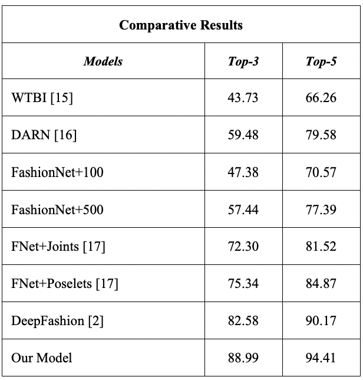
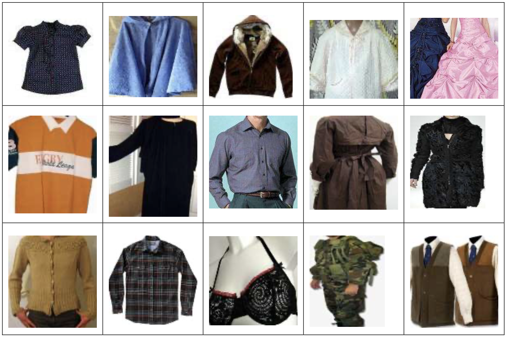

Pattern Recognition
Model 1:
In one approach, pattern recognition works by a method of extracting both global (RadonSig) and local features (SIFT) of clothing images, as well as “statistics of wavelet subbands (STA)” in order to evaluate the complementary relationships between the different feature channels [1]. Local features can be used to recognize patterns that use repetitive primitives, such as plaid and stripes. However, because there can be variations within these categories (e.g. true plaid vs. argyle vs. gingham), global features are also extracted, which provide complementary information to the local features, such as directionality and other statistical information from the pattern.
Source: https://ieeexplore-ieee-org.proxylib.csueastbay.edu/document/6739993
These extracted feature channels are concatenated, and the combined vector is used as input into the support vector machines (SVM) classifier, which is a method of supervised learning [2]. This system is then trained and evaluated on a CCNY Clothing Pattern dataset, with categories such as plaid, striped, patternless, and irregular. Below are the results of comparison in recognition accuracy between different feature channels under different volumes of training sets. The method described achieved the highest accuracy percentage of 92.55% with a training volume of 70%. The confusion matrix is also shown.

Source: https://ieeexplore-ieee-org.proxylib.csueastbay.edu/document/6739993
Clothing color identification is implemented by quantizing the normalized color histogram of each clothing image in the HSI (hue, saturation, and intensity) color space. In other words, for each clothing image, this method “quantizes the pixels in the image to the following 11 colors: red, orange, yellow, green, cyan, blue, purple, pink, black, grey, and white” [1]. White, black, and gray are detected by observing the relationship between saturation and intensity values, while hue values, ranging from 0 to 360, are quantized for the rest of the colors. In cases where multiple colors are present, the system will output only the dominant colors, whose pixels fill more than 5% of the image.
Both the clothing pattern and color recognition results “mutually provide a more precise and meaningful description of clothes to users” [1]. Below are results combining the pattern recognized along with the dominant colors.

Source: https://ieeexplore-ieee-org.proxylib.csueastbay.edu/document/6739993
Model 2:
A second approach classifies clothing items and can identify a variety of attributes, such as type, pattern, and texture. This system enhances FashionNet, “a deep model that learns clothing characteristics by predicting garment qualities and categories together” [3]. FashionNet uses a convolutional deep net, capable of performing multi-class, multi-label classification, in which each clothing article can have one or more clothing attributes attached to it [4]. In order to improve accuracy, the VGG16 design (a convolutional neural network that is sixteen layers deep) which was originally used in FashionNet was replaced by ResNet34 architecture (a thirty-four layer convolutional neural network for image classification). Below are code snippets from the original FashionNet VGG16 convolutional neural network design and results after testing an image.
https://github.com/PlabanM1/FashionNet/blob/master/FashionNet.ipynb
In training the ResNet34 model, the Deep Fashion dataset was used due to its diversity in clothing categories and descriptive attributes. Although “the pre-trained model‘s layers recognize fundamental visual concepts that do not require much training,” it was found that “combining small learning rates for the first layers with big learning rates for the last ones to allow them to fine-tune more quickly” [3]. The network was shown to perform better as training continued, as long as a significant drop in the validation set loss was not experienced. During evaluation, it was shown that this model outperformed others in terms of clothing type classification accuracy, where Top-3 and Top-5 refer to whether the top three or five highest probability answers match the expected answer.


Source: https://ieeexplore-ieee-org.proxylib.csueastbay.edu/document/9820475
Because the Deep Fashion dataset had over 1000 different clothing attributes, the issue of noisy labels arose. Some attribute categories were combined and some were removed in order to reduce it to 57 common attributes. Label smoothing was also implemented. The ResNet34 model was once again used, and upon training, an accuracy multi-score of about 97.88% was achieved [3]. This was tested with a small sample dataset and was shown to accurately recognize various attributes.
Source: https://ieeexplore-ieee-org.proxylib.csueastbay.edu/document/9820475
Model 3:
Another model also uses pre-trained convolutional neural networks to classify apparel. This method of “using a pre-trained CNN model for either fine-tuning a CNN model with a new task, or using the layers activations of pre-trained CNN model for potential feature extraction” is known as transfer learning [5]. The CNNs used include AlexNet, VGGNet, and ResNet, which were all trained on the ACS fashion dataset. This dataset was constructed from the ImageNet dataset, which contains nearly 90,000 images, and covers fifteen different clothing types including dresses, sweaters, undergarments, and uniforms.

Source: https://ieeexplore-ieee-org.proxylib.csueastbay.edu/document/8875916
About 80% of these images were assigned to the training set while the other 20% were assigned to the test set. Deep features were extracted; “fc6 and fc7 activations were used for AlexNet and VGGNet models and fc1000 activation layer was used for ResNet model” [5]. Each deep feature vector was evaluated and the proposed model achieved the highest accuracy percentage, as shown below.
Source: https://ieeexplore-ieee-org.proxylib.csueastbay.edu/document/8875916
The most accurate model for style and pattern recognition was the second, which uses a pre-trained Resnet34 CNN architecture and enhances FashionNet. This method would likely outperform the third model’s proposed method in terms of accuracy when evaluated under the same circumstances. It also contains more descriptive attributes and clothing categories than either of the two methods.